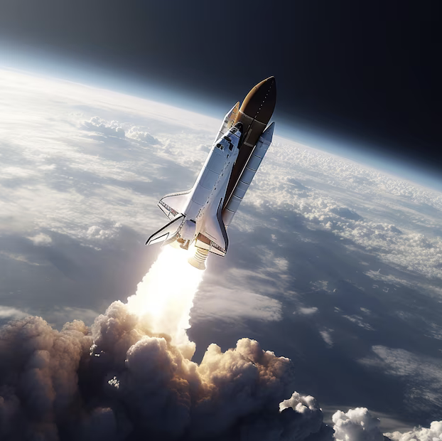

Moon Walk Adventure
Walk where few have ever stepped! The **Moon Walk Adventure** offers a unique opportunity to spend three days on the Moon.
From the thrill of low-gravity moonwalks to breathtaking views of Earth from afar, this package is a once-in-a-lifetime experience.
Enjoy guided tours of the **Sea of Tranquility**, witness stunning lunar sunrises, and relax in our exclusive **Lunar Base Alpha**.
Perfect for explorers at heart!
Mars Colony Experience
Ready to visit Mars? The **Mars Colony Experience** lets you spend a week on the Red Planet, living in a high-tech Martian dome.
Explore the famous **Valles Marineris**, drive across Mars in a rover, and contribute to real scientific discoveries.
This adventure includes daily excursions across Mars’ rocky terrain, and a chance to visit the moons of Phobos and Deimos.
Zero Gravity Fun
Get a taste of space without leaving Earth’s orbit! Our **Zero Gravity Fun** package offers a full day aboard our specially designed spacecraft, allowing you to float weightlessly and enjoy zero-gravity activities.
Experience the joy of flipping mid-air, take part in zero-gravity games, and capture breathtaking photos of Earth from 400 kilometers above.